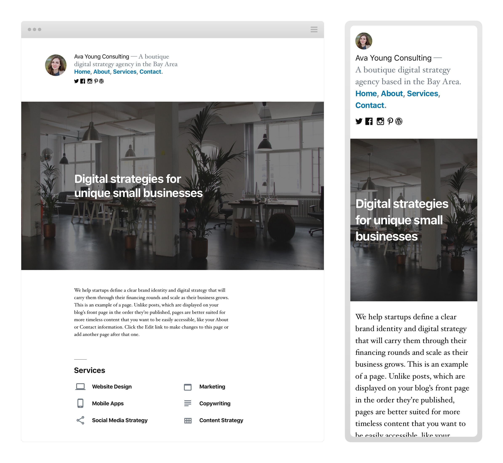
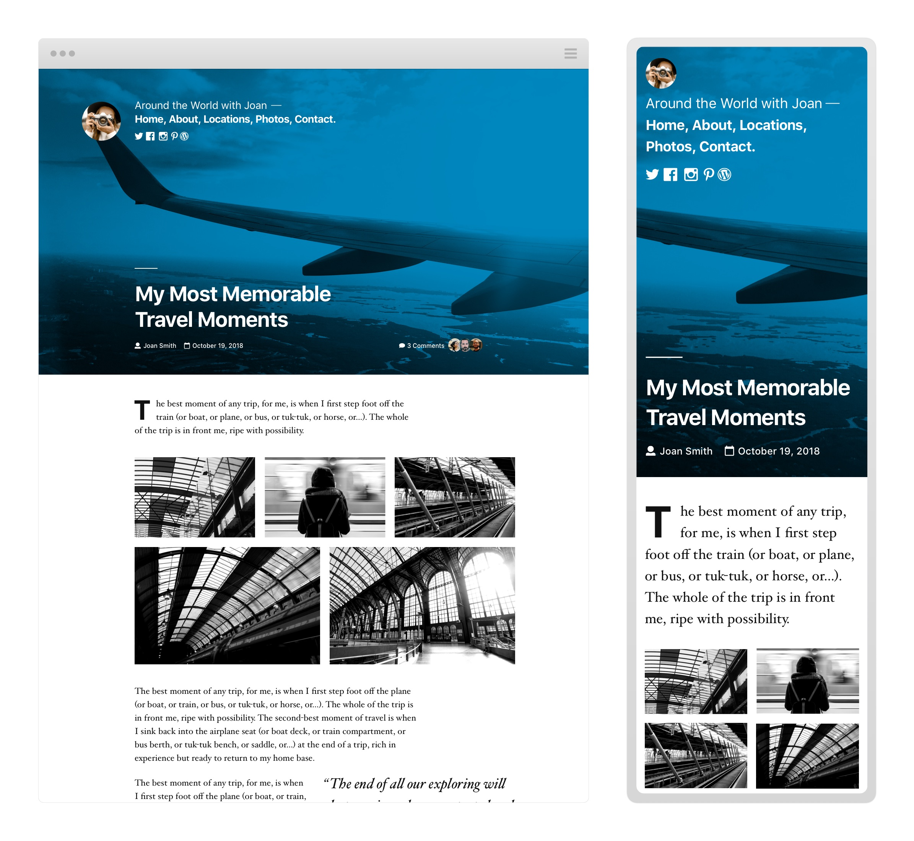
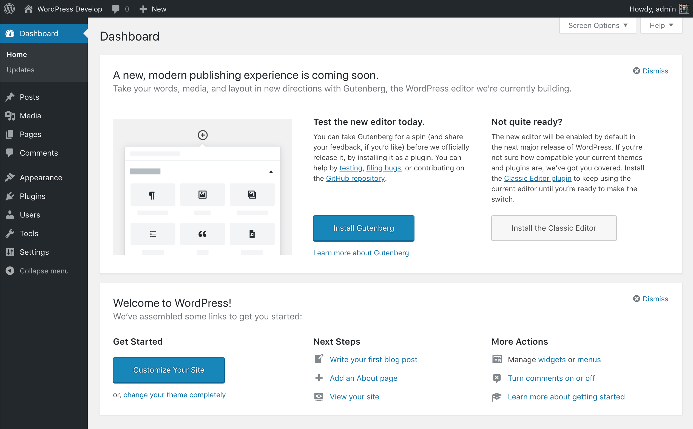

WordPress Lancaster Meetup
Wifi: CFGuest CoworkingLov3
Upgrading to WordPress 5.0
By: Austin Ginder
WordPress 5.0 - What's included
- New default theme called TwentyNineteen
- New WordPress editor codenamed Gutenburg
Twenty Nineteen Theme - Homepage Example
Reference: https://make.wordpress.org/core/2018/10/16/introducing-twenty-nineteen/ {kind=link}
Twenty Nineteen Theme - Blog Post Example
Reference: https://make.wordpress.org/core/2018/10/16/introducing-twenty-nineteen/ {kind=link}
TwentyNineteen theme
Preview by Matias VenturaClassic Editor

Gutenburg Editor

Why WordPress 5.0 is different then previous updates
- Development on the new editor has been in works since January last year. Previously major releases were every 4 months.
- New editor has breaking changes
- New editor requires some learning
Wait, WordPress includes a breaking changes? 😲
Well sorta... 🤔
The new editor is optional. 😌
"Try Gutenberg" Callout in WordPress 4.9.8

Classic Editor Plugin
 Officially supported until December 31, 2021
Officially supported until December 31, 2021
Upgrading to WordPress 5.0
What you need to know.
- Major update includes brand new WordPress editor
- Release date is targeted for November 27th with a fall back plan to January 22, 2019.
- Major versions do not automatically update unless your using a managed WordPress web host.
- Upgrading to WordPress 5.0 with outdated themes/plugins may have issues with the new editor.
- You can update to WordPress 5.0 with the new editor disabled using the “Classic Editor” plugin: https://wordpress.org/plugins/classic-editor/
Recommendations for today
- Update all themes/plugins 👏
- Install Classic or Gutenburg plugin 👌
No surprises with WordPress 5.0 upgrading 🏆
Using the new Editor
What you need to know.
- Blocks will replace Shortcodes 🎉
- Better copy and paste support
- Extendable and better over time
- It's here for the longterm
Is the new Editor compatible with "insert-name" theme/plugin?
- WooCommere 3.5.1+ 👍
- Advanced Custom Fields 5.0+ 👍
- WPBakery Page Builder 5.5.1+ 👍
- Elementor 2.1.0+ 👍
- Slider Revolution 👎
Last Update June 20th 2018
Stats for 880 WordPress sites
- 140 sites - WooCommere 3.5.1+ 👍
- 407 sites - Advanced Custom Fields 5.0+ 👍
- 99 sites - WPBakery Page Builder 5.5.1+ 👍
- 23 sites - Elementor 2.1.0+ 👍
- 117 sites - Slider Revolution 👎